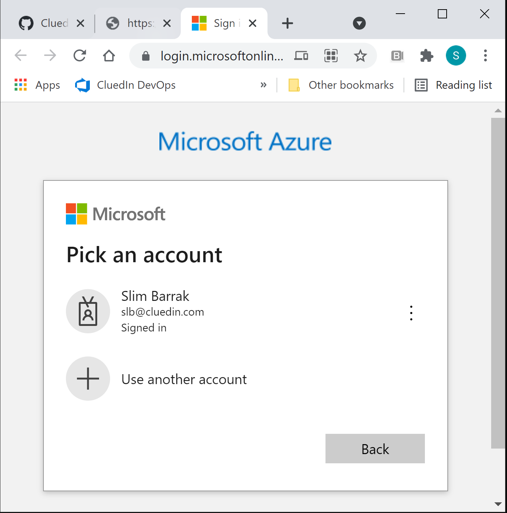
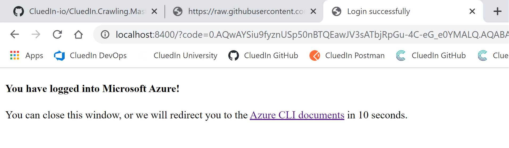
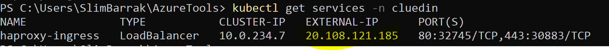
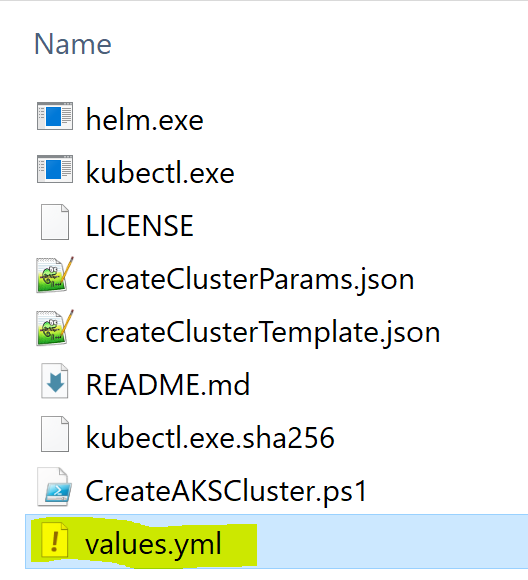

Walkthrough: Install CluedIn on Azure
On this page
- Introduction
- Login to Azure
- Create a resource group for your Kubernetes Cluster
- Create an AKS Cluster to host your CluedIn application
- Networking & Security
- Install CluedIn using Helm
- Next Steps
Introduction
This installation process is done through command lines using PowerShell 7, Azure CLI, Kubectl and Helm.
The purpose of the chart is to install the CluedIn application. This includes the actual CluedIn server, website, and other services required (storage, queues, etc.)
Note: Before proceeding with the installation, you must ensure that all pre-requisites are met.
Login to Azure
Open a PowerShell session, and run the following command:
az login
A browser window will open with Microsoft Azure login page: 
Choose the account you want to use, enter the appropriate MFA information. Once you are connected, you will get this confirmation message 
You can now read, create and access resources in your Azure tenant through Azure CLI.
Create a resource group for your Kubernetes Cluster
In connected PowerShell session, run the following command:
$location = "westeurope" # location is the deployment region of the resource group. Example: eastus, centralus, westeurope etc...
$rgName = "rg-cluedin-dev" # rgName is the name of the resource group. Example: rg-cluedin-dev or rg-cluedin-prod
$subscription = "DataOps-Subscription" # subscription is the name of the parent subscription for the resource group
az group create --location $location --name $rgName --subscription $subscription
Create an AKS Cluster to host your CluedIn application
In this step, you will create an AKS cluster with the following nodepool sizing:
| Node Pool | VM SKU Type | Amount | Purpose |
|---|---|---|---|
| Core Pool | Standard_DS2_v2 | 1 | Kubernetes agent internal processes |
| Data Pool | Standard_A8_v2 | 2 | Memory Optimized pool for Databases |
| Processing Pool | Standard_F16s_v2 | 1 | CPU Optimized for Processing workloads |
| General Pool | Standard_F4s_v2 | 2 | General Purpose nodepool to house CluedIn Microservices |
NB: Later, you can choose to downscale or upscale your nodepools depending on your needs and your workloads.
- Save this ARM Template and ARM Template Parameters files to your
C:\Users\$env:username\AzureToolsfolder. - Open the create-cluster-params.json file and edit the values of the following parameters:
resourceName: choose a name for your AKS cluster, for example:aks-cluedin-dev,aks-cluedin-test,aks-cluedin-prodetc…location: choose the deployment region, for example:uksouth,eastus,westeuropeetc…dnsPrefix: DNS prefix for your cluster, for example: aks-cluedin-dev-dns, aks-cluedin-test-dns etc…kubernetesVersion: 1.20.9 or laternetworkPlugin: can be “kubenet” or “azure”. If you choose azure, The provided template and parameters might not be suitable for the remainder of the install, please refer to Azure documentation for more details. For the remainder of the installation, we are using Kubenet.
- Once you finish editing the create-cluster-params.json, save and close it.
- Run the following script to create your AKS cluster with the predefined parameters:
$rgName = "resource-group-name" # example: "rg-cluedin-dev" $deploymentName = "name-of-deployment" # example: "aks-cluedin-dev-deployment" $armTemplatePath = "C:\Users\$env:username\AzureTools\create-cluster-template.json" # ARM Template that you saved previously. $paramsPath = "C:\Users\$env:username\AzureTools\create-cluster-params.json" # Params file that you saved and edited previously. az deployment group create ` --name $deploymentName ` --resource-group $rgName ` --template-file $armTemplatePath ` --parameters $paramsPath - Once the cluster is successfully created, run the following command to check cluster’s information:
$rgName = "resource group name" # for example: rg-cluedin-dev $clusterName = "cluster name" # for example: aks-cluedin-dev az aks show --name $clusterName --resource-group $rgName
Now, you are ready to install CluedIn on your cluster.
Networking & Security
-
Merge your AKS context to your created cluster using the following command:
$rgName = "resource group name" # for example: rg-cluedin-dev $clusterName = "cluster name" # for example: aks-cluedin-dev az aks get-credentials --resource-group $rgName --name $clusterName - Install HAProxy ingress controller using Helm:
- Navigate to the AzureTools folder and create the namespace that will host the CluedIn components:
kubectl create namespace cluedin helm repo add haproxy-ingress https://haproxy-ingress.github.io/charts helm install haproxy-ingress haproxy-ingress/haproxy-ingress --namespace=cluedin - Run the following command to retrieve the External IP Address assigned to the controller:
kubectl get services -n cluedinIf the external IP shows as “pending”, give it a moment before trying again, then save the External IP address from the output. You will need it for your DNS configuration. 
- Navigate to the AzureTools folder and create the namespace that will host the CluedIn components:
- DNS Routing (If applicable): Through your DNS provider’s management system, make your host point to the public IP of the ingress controller for the following routes:
app.<hostname>, for example: app.cluedin-dev.companyName.com<organizationName>.<hostname>, for example: product.cluedin-dev.companyName.com
- SSL Certificate (If applicable): Create a secret with the SSL certificates for the following routes:
- Option 1: specific subdomains
app.<hostname>, for example: app.cluedin-dev.cluedin.com<organizationName>.<hostname>, for example product.cluedin-dev.companyName.comclean.<hostname>, for example clean.cluedin-dev.companyName.com- Admin URLs:
grafana.<hostname>, for example grafana.cluedin-dev.companyName.compromotheus.<hostname>, for example promotheus.cluedin-dev.companyName.comalertmanager.<hostname>, for example alertmanager.cluedin-dev.companyName.comseq.<hostname>, for example seq.cluedin-dev.companyName.com
- Option 2: Wildcard certificate
- If possible, the SSL Certificate can be a wildcard one, for example: *.cluedin-dev.companyName.com
- The certificate secret can be created using the following command:
kubectl create secret tls <secret-name>--key <private-key-path> --cert <public-certificate-path>NB: private-key-path = path to the tls.key file and public-certificate-path = path to tls.crt file. There is an option to run without SSL, although not recommended, especially for production environments.
- Option 1: specific subdomains
Install CluedIn using Helm
- Start by registering the Helm chart repository containing the CluedIn chart:
helm repo add cluedin https://cluedin-io.github.io/Charts/ helm repo update - Create a secret with your Docker credentials to access CluedIn images through Docker Hub: Run the following command:
kubectl create secret docker-registry docker-registry-key ` --namespace cluedin ` --docker-server='docker.io' ` --docker-username='<your Dockerhub username>' ` --docker-password='<your Dockerhub password>' ` --docker-email='<your Docker Hub email>'A confirmation message will appear when the secret is created.
- Make sure you are in your AzureTools folder, then using the command below, you will fetch the values.yml configuration file to configure your CluedIn instance
helm inspect values cluedin/cluedin > values.ymlThe file will be downloaded to your AzureTools folder.

Fill out the values.yml file, specifically the following sections:
Default Organization and application Admin
bootstrap:
organization:
name: "orgName" # Organization Account Name, example: Products, Customers, People, Vendors etc...
email: "admin@companyName.com" # Admin account's Email
username: "admin@companyName.com "# Admin account's username (should be the same as above)
prefix: "orgNamePrefix" # Organization prefix used in the URL to access this organization (tenant), can be the same as organizationName
password: "!!!StrongPassword123!!!" # Admin account's password
emailDomain: "companyName.com" # Admin account's Email domain, can be left empty and admin email's domain will be used in this case.
Please note that the organization name cannot contain hyphens or dots in it, and that organization prefix can have hyphens, but not dots.
DNS Configuration
If your hostname is companyName.com and you choose a prefix to your CluedIn dev application that is cluedin-dev, your DNS section should look like the following:
dns:
hostname: "companyName.com" # Base host to use for all URLs. Will be combined with the organization name e.g https://<org-name>.<hostname>
prefix: "cluedin-dev" # Usually a qualifier to the CluedIn instance, but can be left empty
subdomains: # The following are the default, each one corresponds to a subdomain
application: "app" # For app.cluedin-dev.companyName.com
openrefine: "clean" # For clean.cluedin-dev.companyName.com
grafanaAdmin: "grafana" # For grafana.cluedin-dev.companyName.com
prometheusAdmin: "prometheus" # For prometheus.cluedin-dev.companyName.com
alertManagerAdmin: "alertmanager" # For alertmanager.cluedin-dev.companyName.com
seq: "seq" # For seq.cluedin-dev.companyName.com
Please note that the above is also equivalent to:
dns:
hostname: "cluedin-dev.companyName.com" # The prefix is added to the hostname
prefix: "" # No further prefix defined
subdomains:
application: "app"
openrefine: "clean"
grafanaAdmin: "grafana"
prometheusAdmin: "prometheus"
alertManagerAdmin: "alertmanager"
seq: "seq"
Also, all the subdomains values can be overridden by values that you prefer, like in the following example:
dns:
hostname: "companyName.com" # Main company's hostname is used
prefix: "" # No prefix used
subdomains:
application: "app-cluedin-dev"
openrefine: "clean-cluedin-dev"
grafanaAdmin: "grafana-cluedin-dev"
prometheusAdmin: "prometheus-cluedin-dev"
alertManagerAdmin: "alertmanager-cluedin-dev"
seq: "seq-cluedin-dev"
In this case, the app URL will be: app-cluedin-dev.companyName.com
Finally, if you choose to use the Ingress controller’s external IP with no specific hostname until you get your DNS configuration sorted out, the DNS section would be:
dns:
hostname: "EXTERNAL_IP_VALUE.nip.io" # For example 20.90.172.127.nip.io
prefix: ""
SSL and HTTPS (If applicable)
If you are configuring HTTPS too, modify the following section as per your needs:
ingress:
forceHttps: True # Set to True if you want to force HTTPS usage
annotations:
kubernetes.io/ingress.class: haproxy
ingress.kubernetes.io/ssl-redirect: "false"
tls:
hosts: [ "*.cluedin-dev.companyName.com" ] # enumerate the hosts defined in the certificate, or wildcard URL.
secretName: "SSL-Secret-Name" # TLS Secret to use for ingress - If no hosts create a wildcard host
hasClusterCA: false # If certificates are generated by a local CA (secret has 'ca.crt' section)
Save the values.yml file. Please note that these different settings can be modified later even after the installation of CluedIn.
Finally, install Cluedin
Run the following command to install CluedIn:
$releaseName = "choose a name for the release" # Example: cluedin-dev
$pathToValuesYml = "Path to values.yml" # Example: C:\Users\$env:username\AzureTools\values.yml
helm upgrade $releaseName cluedin/cluedin -n cluedin --install --values $pathToValuesYml
Upon running the helm upgrade command, Helm will begin installation of CluedIn platform into your Kubernetes cluster. At the end of the installation process, you will be prompted with the configuration of your install, URLs you can use to access your freshly installed platform.
All the workloads may take up to 10 minutes to spin up. You can check your status by running:
kubectl get pods -n cluedin
In a healthy installation scenario, all the pods should be in a Ready state.
Additionally, you can check the platform’s health by going to https://app.<hostname>/api/status healthcheck API.
You will be able to login to the platform by going to https://app.<hostname>/ (or http://app.<hostname>/ if not using SSL).
Next Steps
After logging in to the platform, you can proceed with enabling single sign on for your users to access the platform, as well as start loading data in via Data Sources or installing some crawlers. Below you will find some useful links on achieving the above:
- Enabling Single Sign On
- Restricting access to CluedIn Clean via Basic Authentication
- Install a crawler/custom component
Optionally, you can also adjust other settings to cater for more complex scenarios: